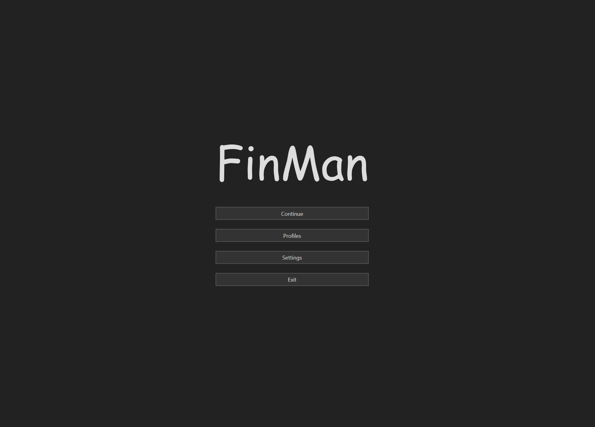

Introducing the finance manager, a user-friendly software solution for effortless personal
financial management. With real-time insights, budgeting tools, and secure integration, it
simplifies your finances. Stay informed, simulate scenarios, and protect your data with robust
encryption. Make informed decisions and take control of your finances with the finance manager.
Maximize your financial potential with the finance manager's intuitive interface and powerful
features. Easily track income, expenses, and investments to gain a clear understanding of your
financial health. Set and achieve financial goals with personalized spending plans and timely
alerts. Experience peace of mind knowing that your financial data is secure and confidential with
the finance manager.